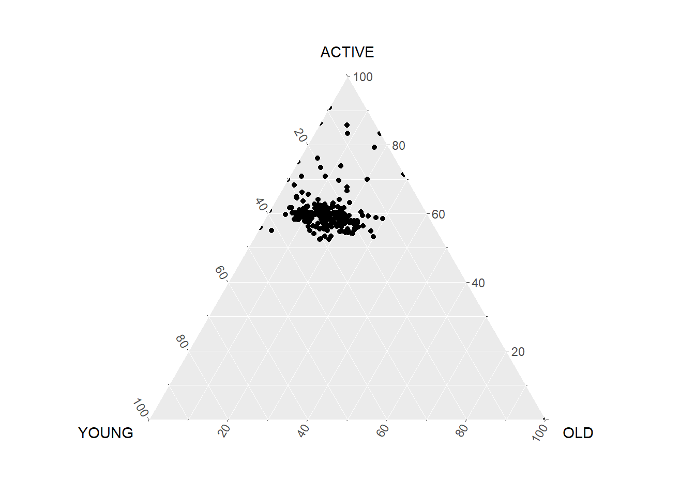
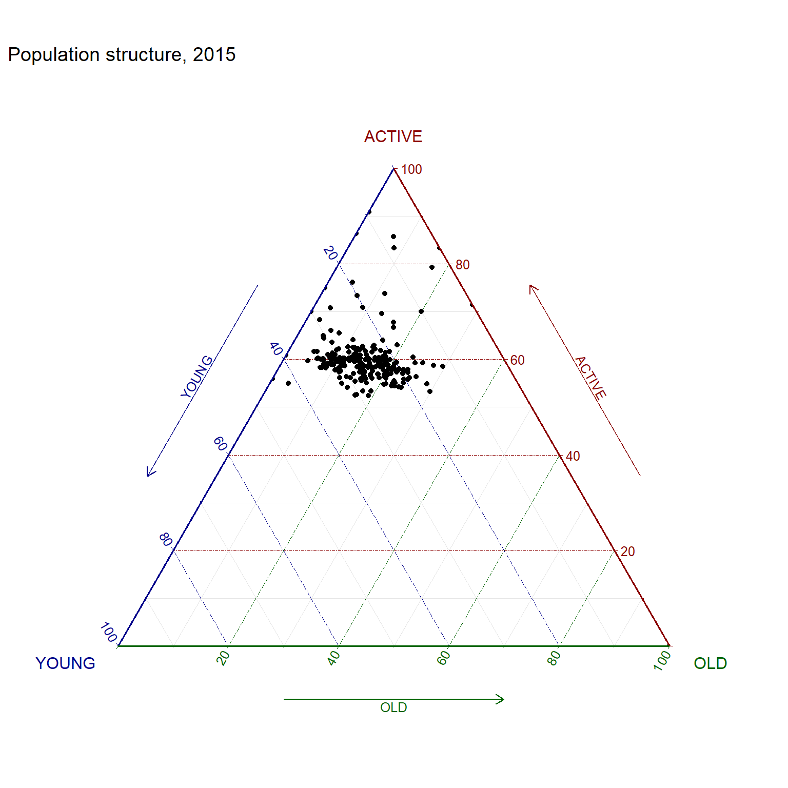

pacman::p_load(ggtern, plotly, tidyverse)Ternary Plot for Singapore Population Structure
Hands-on Exercise 5.1 : Visual Multivariate Analysis
1. OVERVIEW
This study explores various approaches to building ternary plots programmatically using R for visualising and analysing population structure of Singapore.
Ternary plot1, also known as a ternary graph, triangle plot, simplex plot, Gibbs triangle, de Finetti diagram, is a way to display or analyse the distribution of compositional data in a 3-dimensional case.
Each side is scaled from 0 to 1, representing one of the three components. A point is plotted based on the intersection between the perpendicular lines from the sides.
2. R PACKAGE REQUIRED
2.1 Load R Packages
3. DATA PREPARATION
3.1 Acquire Data Source
This study will be based on Singapore Residents by Planning AreaSubzone, Age Group, Sex and Type of Dwelling, June 2000-2018.
- The name of this data set in CSV format is respopagsex2000to2018_tidy.csv/
3.2 Import Data
3.2.1 Import Attribute Data
Involved two (2) steps : import and inspect imported data set.
pop_data <- read_csv("data/respopagsex2000to2018_tidy.csv")
problems(pop_data)# A tibble: 0 × 5
# ℹ 5 variables: row <int>, col <int>, expected <chr>, actual <chr>, file <chr>3.3 Wrangle Data
Show the code
agpop_mutated <- pop_data %>%
mutate(`Year` = as.character(Year)) %>%
spread(AG, Population) %>%
mutate(YOUNG = rowSums(.[4:8])) %>%
mutate(ACTIVE = rowSums(.[9:16])) %>%
mutate(OLD = rowSums(.[17:21])) %>%
mutate(TOTAL = rowSums(.[22:24])) %>%
filter(Year == 2018) %>%
filter(TOTAL > 0)4. CREATE TERNARY PLOT
4.1 Create static ternary diagram
Show the code
ggtern(data = agpop_mutated,
aes(x = YOUNG,
y = ACTIVE,
z = OLD)) +
geom_point()
4.1.1 Additional elements
ggtern(data = agpop_mutated,
aes(x = YOUNG,
y = ACTIVE,
z = OLD)) +
geom_point() +
labs(title = "Population structure, 2015") +
theme_rgbw()
Remarks :
plot_ly( ) function is not able to port ggtern chart into ggplot2. A native function will be required to do so.
4.2 Create interactive ternary diagram
label <- function(txt) {
list(
text = txt,
x = 0.1, ax = 0,
y = 1, ay = 0,
xref = "paper",
yref = "paper",
align = "center",
font = list
(family = "serif",
size = 15,
color = "white"),
bgcolor = "#b3b3b3",
bordercolor = "black",
borderwidth = 2)
}
axis <- function(txt) {
list(
title = txt,
tickformat = ".0%",
tickfont = list(size = 10)
)
}
ternaryAxes <- list(
aaxis = axis("Young"),
baxis = axis("Active"),
caxis = axis("Old")
)
plot_ly(agpop_mutated,
a = ~YOUNG,
b = ~ACTIVE,
c = ~OLD,
color = I("black"),
type = "scatterternary") %>%
layout(annotations = label
("Ternary Markers"),
ternary = ternaryAxes)Footnotes
Wikipedia. 2022. Ternary Plot. https://en.wikipedia.org/wiki/Ternary_plot↩︎